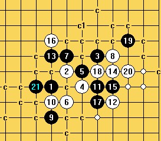
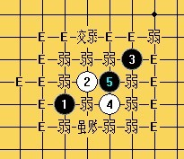
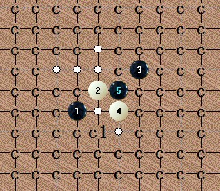

编号7：外峡月某4问题，（10K金）虎哥已解决一强6
#1 编号7：外峡月某4问题，（10K金）虎哥已解决一强6作者：失落刀 发表时间：2011-9-26 18:36:08
=======上图对应的爱五子棋谱代码如下，以便你拆解：========
h8i9k10j8j9
======================================================
求黑必胜，金5K，逆刃赞助。
2012年10月26日23:39:11楼主跟风赞助5K------失落刀
［此帖子已被 逆刃 在 2012-11-12 21:35:24 编辑过］
#2 Re:编号7：外峡月某4问题，（5K金）作者：逆刃 发表时间：2012-10-25 21:39:30
这个应该不算太难吧，怎么没有人拆勒。。#3 Re:编号7：外峡月某4问题，（5K金）作者：自来水 发表时间：2012-10-25 21:59:02
这不难么..
#4 Re:自来水【==Re:编号7：外峡月某4问题，（5K金）==】作者：逆刃 发表时间：2012-10-26 22:56:15
引用：
原文由 自来水 发表于 2012-10-25 21:59:02 :
这不难么..
这个局面好像明教慢棋的时候我拆过，当时差不多就拆到不剩下多少了，一直搁那估计都有4、5年了吧，估摸着应该有人已经解决了，就随口说说，呵呵。
LS有兴趣的话可以试试这个7。
#5 Re:编号7：外峡月某4问题，（5K金）作者：逆刃 发表时间：2012-10-26 23:08:52
补充一点，我当时拆的结论是，8手在L10活三唯一，黑棋9手最强也是唯一在H6，白棋10手最强（几乎唯一防）在H10，之后最强线路如图：
以上应该是最强一路。
#6 Re:编号7：外峡月某4问题，（5K金）作者：逆刃 发表时间：2012-10-26 23:13:25
刚刚看了下，这个15能杀。
其余也就问题不大了，有兴趣地毯此局面的朋友，在此跟帖我将尽力帮忙。
［此帖子已被 逆刃 在 2012-10-26 23:17:38 编辑过］
［ 失落刀 于 2012-10-26 23:34:47 时花20金币送鲜花一朵］
［ 失落刀 于 2012-10-26 23:34:47 时花20金币送鲜花一朵］
［ 失落刀 于 2012-10-26 23:34:47 时花20金币送鲜花一朵］
［ 失落刀 于 2012-10-26 23:34:47 时花20金币送鲜花一朵］
［ 失落刀 于 2012-10-26 23:34:47 时花20金币送鲜花一朵］
［ 失落刀 于 2012-10-26 23:34:47 时花20金币送鲜花一朵］
［ 失落刀 于 2012-10-26 23:34:47 时花20金币送鲜花一朵］
［ 失落刀 于 2012-10-26 23:34:47 时花20金币送鲜花一朵］
［ 失落刀 于 2012-10-26 23:34:47 时花20金币送鲜花一朵］
［ 失落刀 于 2012-10-26 23:34:47 时花20金币送鲜花一朵］
［ 失落刀 于 2012-10-26 23:34:47 时花20金币送鲜花一朵］
［ 失落刀 于 2012-10-26 23:34:47 时花20金币送鲜花一朵］
［ 自来水 于 2012-10-26 23:45:56 时花20金币送鲜花一朵］
［ 自来水 于 2012-10-26 23:45:56 时花20金币送鲜花一朵］
［ 自来水 于 2012-10-26 23:45:56 时花20金币送鲜花一朵］
#7 Re:编号7：外峡月某4问题，（10K金）作者：逆刃 发表时间：2012-10-26 23:48:53
谱里通型太多，不方便发出来，其余的都已地毯，只要搞定这个8就行。#8 Re:编号7：外峡月某4问题，（10K金）作者：逆刃 发表时间：2012-11-1 18:15:41
又把外峡月的贴顶出来，再怎么顶也没人有兴趣拆，因为太难了！#9 Re:编号7：外峡月某4问题，（10K金）作者：啊呆 发表时间：2012-11-1 19:41:12
拆的人还是有的只是拆的人少~#10 Re:编号7：外峡月某4问题，（10K金）作者：逆刃 发表时间：2012-11-1 21:17:40
LS说的是你自己吧，哈哈~#11 Re:编号7：外峡月某4问题，（10K金）作者：啊呆 发表时间：2012-11-1 21:28:49
还有你和老虎啊#12 Re:编号7：外峡月某4问题，（10K金）作者：逆刃 发表时间：2012-11-1 21:31:52
我不是主力。呵呵~#13 Re:编号7：外峡月某4问题，（10K金）作者：虎哥 发表时间：2012-11-2 17:11:48
这个可真够难的。。。。#14 Re:编号7：外峡月某4问题，（10K金）作者：逆刃 发表时间：2012-11-2 18:50:50
LS具体指的哪呢？如果有难点可以发出来，大家一起探讨啊！#15 Re:编号7：外峡月某4问题，（10K金）作者：虎哥 发表时间：2012-11-6 16:01:15
这两个10
#16 Re:编号7：外峡月某4问题，（10K金）作者：侯军学棋 发表时间：2012-11-8 8:40:46
#17 Re:编号7：外峡月某4问题，（10K金）作者：虎哥 发表时间：2012-11-8 8:52:08
走12右边，M8#18 Re:编号7：外峡月某4问题，（10K金）作者：逆刃 发表时间：2012-11-8 9:55:14
回15楼，两个10的问题，第一个10，我的建议是：
或者
若14手不冲四，则直接杀
另一个10，我建议可以考虑这个路线：
#19 Re:逆刃【==Re:编号7：外峡月某4问题，（10K金）==】作者：逆刃 发表时间：2012-11-8 18:12:58
今天下班回得早点，扫了个次强10的地毯，最强10还是非常麻烦的。
 次强10地毯.rar
次强10地毯.rar［ 失落刀 于 2012-11-8 19:20:17 时花20金币送鲜花一朵］
［ 失落刀 于 2012-11-8 19:20:17 时花20金币送鲜花一朵］
［ 失落刀 于 2012-11-8 19:20:17 时花20金币送鲜花一朵］
［ 失落刀 于 2012-11-8 19:20:17 时花20金币送鲜花一朵］
［ 失落刀 于 2012-11-8 19:20:17 时花20金币送鲜花一朵］
［ 失落刀 于 2012-11-8 19:20:17 时花20金币送鲜花一朵］
［ 失落刀 于 2012-11-8 19:20:17 时花20金币送鲜花一朵］
［ 失落刀 于 2012-11-8 19:20:17 时花20金币送鲜花一朵］
［ 虎哥 于 2012-11-8 21:46:14 时花20金币送鲜花一朵］
［ 虎哥 于 2012-11-8 21:46:14 时花20金币送鲜花一朵］
［ 虎哥 于 2012-11-8 21:46:14 时花20金币送鲜花一朵］
［ 虎哥 于 2012-11-8 21:46:14 时花20金币送鲜花一朵］
［ 虎哥 于 2012-11-8 21:46:14 时花20金币送鲜花一朵］
#20 Re:失落刀【==编号7：外峡月某4问题，（10K金）==】作者：虎哥 发表时间：2012-11-12 16:25:20
逆刃兄说只要搞定这个8就行，我就只搞了这个8，就这个8也要了我老命。

右边这些白点和c1是一样的，所以没扫。此次扫谱用的是简易设置，如有问题，请多包涵。
［ 失落刀 于 2012-11-12 16:32:40 时花20金币送鲜花一朵］
［ 失落刀 于 2012-11-12 16:32:40 时花20金币送鲜花一朵］
［ 失落刀 于 2012-11-12 16:32:40 时花20金币送鲜花一朵］
［ 失落刀 于 2012-11-12 16:32:40 时花20金币送鲜花一朵］
［ 失落刀 于 2012-11-12 16:32:40 时花20金币送鲜花一朵］
［ 失落刀 于 2012-11-12 16:32:40 时花20金币送鲜花一朵］
［ 失落刀 于 2012-11-12 16:32:40 时花20金币送鲜花一朵］
［ 失落刀 于 2012-11-12 16:32:40 时花20金币送鲜花一朵］
［ 失落刀 于 2012-11-12 16:32:40 时花20金币送鲜花一朵］
［ 失落刀 于 2012-11-12 16:32:40 时花20金币送鲜花一朵］
［ 失落刀 于 2012-11-12 16:32:40 时花20金币送鲜花一朵］
［ 失落刀 于 2012-11-12 16:32:40 时花20金币送鲜花一朵］
［ 失落刀 于 2012-11-12 16:35:15 时奖励此帖[金币加 100 威望加1］
［ 郎情 于 2012-11-12 21:17:23 时花20金币送鲜花一朵］
［ 郎情 于 2012-11-12 21:17:23 时花20金币送鲜花一朵］
［ 郎情 于 2012-11-12 21:17:23 时花20金币送鲜花一朵］
［ 郎情 于 2012-11-12 21:17:23 时花20金币送鲜花一朵］
［ 郎情 于 2012-11-12 21:17:23 时花20金币送鲜花一朵］
［ 逆刃 于 2012-11-12 21:26:38 时花20金币送鲜花一朵］
［ 逆刃 于 2012-11-12 21:26:38 时花20金币送鲜花一朵］
［ 逆刃 于 2012-11-12 21:26:38 时花20金币送鲜花一朵］
［ 逆刃 于 2012-11-12 21:26:38 时花20金币送鲜花一朵］
［ 逆刃 于 2012-11-12 21:26:38 时花20金币送鲜花一朵］
［ 逆刃 于 2012-11-12 21:26:38 时花20金币送鲜花一朵］
［ 逆刃 于 2012-11-12 21:26:38 时花20金币送鲜花一朵］
［ 逆刃 于 2012-11-12 21:26:38 时花20金币送鲜花一朵］
［ 逆刃 于 2012-11-12 21:26:38 时花20金币送鲜花一朵］
［ 逆刃 于 2012-11-12 21:26:38 时花20金币送鲜花一朵］
#21 Re:编号7：外峡月某4问题，（10K金）作者：失落刀 发表时间：2012-11-12 16:30:35
金5K请查收。
待逆刃验证完毕这个5后，他另有5K相赠。
#22 Re:编号7：外峡月某4问题，（10K金）虎哥已解决作者：逆刃 发表时间：2012-11-12 21:29:22
这个5必胜还有很长的路要走哦，我只是说这个6应该能杀，当时是回复的3楼，现在证明此6确实是必败的。要证明5手必胜得把其它6也一起地毯了才行。#23 Re:逆刃【==Re:编号7：外峡月某4问题，（10K金）虎哥已解决==】作者：逆刃 发表时间：2012-11-12 21:36:46
我传个此6的地毯上来吧，谱合并过几次，可能有通型漏掉的，有问题的话可以跟帖。
外峡月强6必败地毯.rar［ 失落刀 于 2012-11-12 21:51:15 时奖励此帖[金币加 100 威望加1］
［ 失落刀 于 2012-11-12 21:54:36 时花20金币送鲜花一朵］
［ 失落刀 于 2012-11-12 21:54:36 时花20金币送鲜花一朵］
［ 失落刀 于 2012-11-12 21:54:36 时花20金币送鲜花一朵］
［ 失落刀 于 2012-11-12 21:54:36 时花20金币送鲜花一朵］
［ 失落刀 于 2012-11-12 21:54:36 时花20金币送鲜花一朵］
［ 失落刀 于 2012-11-12 21:54:36 时花20金币送鲜花一朵］
［ 失落刀 于 2012-11-12 21:54:36 时花20金币送鲜花一朵］
［ 失落刀 于 2012-11-12 21:54:36 时花20金币送鲜花一朵］
［ 失落刀 于 2012-11-12 21:54:36 时花20金币送鲜花一朵］
［ 失落刀 于 2012-11-12 21:54:36 时花20金币送鲜花一朵］
［ 失落刀 于 2012-11-12 21:54:36 时花20金币送鲜花一朵］
［ 失落刀 于 2012-11-12 21:54:36 时花20金币送鲜花一朵］
#24 Re:逆刃【==Re:逆刃【==Re:编号7：外峡月某4问题，（10K金）虎哥已解决==】==】作者：逆刃 发表时间：2012-11-12 21:58:24
还有一些6，不过应该没这个难，如果有哪位朋友有解决了的6可以发上来共享一下，鲜花伺候！

#25 Re:逆刃【==Re:编号7：外峡月某4问题，（10K金）虎哥已解决==】作者：虎哥 发表时间：2012-11-12 22:03:38
少了一个弱10，补上10.rar［ 逆刃 于 2012-11-12 22:05:33 时花20金币送鲜花一朵］
［ 逆刃 于 2012-11-12 22:05:33 时花20金币送鲜花一朵］
［ 逆刃 于 2012-11-12 22:05:33 时花20金币送鲜花一朵］
#26 Re:编号7：外峡月某4问题，（10K金）虎哥已解决一强6作者：侯军学棋 发表时间：2012-11-12 22:48:45
［此帖子已被 侯军学棋 在 2012-11-12 23:12:18 编辑过］
#27 Re:编号7：外峡月某4问题，（10K金）虎哥已解决一强6作者：侯军学棋 发表时间：2012-11-12 23:14:00
#28 Re:编号7：外峡月某4问题，（10K金）虎哥已解决一强6作者：侯军学棋 发表时间：2012-11-12 23:21:44
我没有扫完bbbbbb.zip［ 逆刃 于 2012-11-12 23:54:07 时奖励此帖[金币加 100 威望加1］
［ 逆刃 于 2012-11-12 23:54:29 时花20金币送鲜花一朵］
［ 逆刃 于 2012-11-12 23:54:29 时花20金币送鲜花一朵］
［ 逆刃 于 2012-11-12 23:54:29 时花20金币送鲜花一朵］
［ 逆刃 于 2012-11-12 23:54:29 时花20金币送鲜花一朵］
［ 逆刃 于 2012-11-12 23:54:29 时花20金币送鲜花一朵］
［ 逆刃 于 2012-11-12 23:54:29 时花20金币送鲜花一朵］
［ 逆刃 于 2012-11-12 23:54:29 时花20金币送鲜花一朵］
［ 逆刃 于 2012-11-12 23:54:29 时花20金币送鲜花一朵］
［ 逆刃 于 2012-11-12 23:54:29 时花20金币送鲜花一朵］
［ 逆刃 于 2012-11-12 23:54:29 时花20金币送鲜花一朵］
［ 郎情 于 2012-11-13 3:41:27 时花20金币送鲜花一朵］
［ 郎情 于 2012-11-13 3:41:27 时花20金币送鲜花一朵］
［ 郎情 于 2012-11-13 3:41:27 时花20金币送鲜花一朵］
［ 郎情 于 2012-11-13 3:41:27 时花20金币送鲜花一朵］
［ 郎情 于 2012-11-13 3:41:27 时花20金币送鲜花一朵］
#29 Re:编号7：外峡月某4问题，（10K金）虎哥已解决一强6作者：侯军学棋 发表时间：2012-11-12 23:35:50
［ 日月丽天 于 2012-11-13 9:13:30 时花20金币送鲜花一朵］
［ 日月丽天 于 2012-11-13 9:13:30 时花20金币送鲜花一朵］
［ 日月丽天 于 2012-11-13 9:13:30 时花20金币送鲜花一朵］
#30 Re:编号7：外峡月某4问题，（10K金）虎哥已解决一强6作者：逆刃 发表时间：2012-11-12 23:52:38
LS的那个4应该是外峡月难以地毯的两个4之一。因为太难，没有仔细研究过，感觉应该属于平衡局面，即使一打的话，黑要必胜应该也难。#31 Re:编号7：外峡月某4问题，（10K金）虎哥已解决一强6作者：虎哥 发表时间：2012-11-13 13:39:43
#32 Re:逆刃【==Re:逆刃【==Re:逆刃【==Re:编号7：外峡月某4问题，（10K金）虎哥已解决==】==】==】作者：中原一点红 发表时间：2014-1-28 3:49:54
引用：
原文由 逆刃 发表于 2012-11-12 21:58:24 :还有一些6，不过应该没这个难，如果有哪位朋友有解决了的6可以发上来共享一下，鲜花伺候！
这个6怎么杀的？
还有这两个10怎么杀的？
#33 Re:编号7：外峡月某4问题，（10K金）虎哥已解决一强6作者：平凡人生 发表时间：2014-2-6 21:48:37
#34 Re:平凡人生【==Re:编号7：外峡月某4问题，（10K金）虎哥已解决一强6==】作者：小样就是这个样 发表时间：2014-2-7 8:42:58
21走H11冲四不是杀了吗？不冲可能会有点难度14.rar［ 平凡人生同学于 2014-2-7 9:46:57 时花20金币送鲜花一朵］
［ 平凡人生同学于 2014-2-7 9:46:57 时花20金币送鲜花一朵］
［ 平凡人生同学于 2014-2-7 9:46:57 时花20金币送鲜花一朵］
#35 Re:小样就是这个样【==Re:平凡人生【==Re:编号7：外峡月某4问题，（10K金）虎哥已解决一强6==】==】作者：平凡人生 发表时间：2014-2-7 9:47:53
谢谢小样老师。#36 Re:编号7：外峡月某4问题，（10K金）虎哥已解决一强6作者：罗源棋手 发表时间：2014-2-7 13:20:15
问下这个开局前5手和峡月一样么，。有没什么盘端区别。。。#37 Re:编号7：外峡月某4问题，（10K金）虎哥已解决一强6作者：日月丽天 发表时间：2014-2-7 14:51:00
这个是峡月的外婆，所以叫外峡月，相当于是外婆和外孙们不一样的区别。
#38 Re:编号7：外峡月某4问题，（10K金）虎哥已解决一强6作者：逆刃 发表时间：2014-2-7 16:42:18
不知道这个地毯了没有啊~似乎没有什么强防嘛，一打5的唯一6解决了没？#39 Re:编号7：外峡月某4问题，（10K金）虎哥已解决一强6作者：逆刃 发表时间：2014-2-7 17:32:55
#40 Re:编号7：外峡月某4问题，（10K金）虎哥已解决一强6作者：逆刃 发表时间：2014-2-7 17:50:04
我这里大差不差都地毯了，但是有点乱哦，哪个朋友分享一个这个5的地毯吧！
另外，一打5有没有地毯了的？
#41 Re:编号7：外峡月某4问题，（10K金）虎哥已解决一强6作者：日月丽天 发表时间：2014-2-7 18:00:06
这样的8影响必胜
？
#42 Re:编号7：外峡月某4问题，（10K金）虎哥已解决一强6作者：逆刃 发表时间：2014-2-7 18:17:30
实战的话可能第一个比较好，如果必胜的话，似乎第二个更有可能吧！#43 Re:编号7：外峡月某4问题，（10K金）虎哥已解决一强6作者：虎哥 发表时间：2014-2-8 9:45:30
解决了这个，这个5就必胜了
#44 Re:编号7：外峡月某4问题，（10K金）虎哥已解决一强6作者：虎哥 发表时间：2014-2-27 9:47:53
更正一个杀法，21先冲四再做棋。原谱21杀起来有困难。